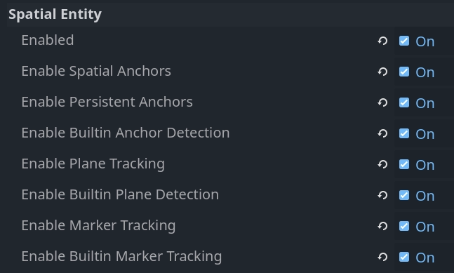
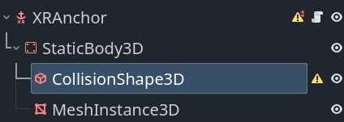

Attention: Here be dragons
This is the latest
(unstable) version of this documentation, which may document features
not available in or compatible with released stable versions of Godot.
Checking the stable version of the documentation...
OpenXR 空间实体
对于任何类型的增强现实应用，你都需要访问真实世界的信息并能跟踪其位置轨道，OpenXR的空间实体API正是为这个目的而引入的。
它采用了非常模块化的设计。这套 API 的核心主要定义了现实世界中的实体（entities）是如何构建的、如何被找到的，以及关于它们的信息是如何被存储和访问的。
在此基础上还添加了各种扩展，用于实现特定的系统，例如标记跟踪、平面跟踪以及锚点。这些统称为空间能力。
系统处理的每一个实体都能被分解为更小的组件，这使得系统易于拓展与添加新的功能。
供应商有能力去实现并公开可与核心 API 配合使用的额外能力和组件类型。对于Godot而言，这些功能可以通过拓展来实现。尽管这种实现并非本手册的讨论范围。
最后需要指出的是，空间实体系统使用了异步函数，这意味着你可以启动一个进程，稍后才得到他的完成通知。
设置
想要使用空间实体（spatial entities）功能，你需要先开启对应的项目设置。你可以在 OpenXR 选项分类下找到这些设置。

Settings（设置） |
描述 |
|---|---|
Enabled |
请启用空间实体系统核心。任何空间实体系统必须启动该核心才能工作。 |
启用空间锚点 |
启用空间锚点功能以允许创建并追踪空间锚点。 |
启用持久化锚点 |
启用空间锚点持久化功能，意味着空间锚点的位置会被存储并可以在后续的会话之中检索。 |
启用内置锚点检测， |
启用内置锚点检测逻辑，这将在追踪更新时自动检索持久锚点并调整锚点的位置。 |
启用平面跟踪 |
启用平面跟踪能力，以便检测地面、墙壁、天花板以及桌面等表面。 |
启用内置的平面检测 |
启用内置的平面检测逻辑，这将自动对变得可用的新平面数据做出反应。 |
启用标记跟踪 |
启用我们的标记跟踪能力，以便检测二维码、Aruco 标记以及 April 标签等标记。 |
启用内置标记追踪， |
启用我们的内置标记检测逻辑，这会对发现新标记或是玩家空间内标记的移动做出自动的反应。 |
备注
请注意，各种 XR 设备还要求设置权限标志。这些需要在导出预设设置中启用。
启用不同的能力会激活相关的 OpenXR API，但是，为了这些信息交互，仍需要额外的逻辑才行。对于每个核心系统，我们都拥有可以启用的内置逻辑来为你完成这些工作。
我们会先假设内置逻辑已经开启，在这个前提下讨论空间实体（spatial entities）系统。然后，我们会去了解一下底层的 API，看看如何自己去实现这套功能。不过需要注意的是，自己手动实现往往有点‘杀鸡用牛刀’（多此一举），因为暴露这些底层 API 主要是为了让 GDExtension 插件能够去实现额外的扩展功能。
创建我们的空间管理器
当空间实体被侦测到或是创建，一个 OpenXRSpatialEntityTracker 对象会被实例化并注册到 XRServer。
每一个种类的空间实体都会实现自己的子类，并且我们可以对每种不同类型的实体作出反应。
总体而言，我们会为每一种实体实例化不同的子场景。由于跟踪器对象可以与 XRAnchor3D 节点配合使用，这些子场景应将此节点用作根节点。
素有的实体追踪器最终会通过其 default 姿态暴露其坐标。
通过创建一个管理器对象，我们可以自动创建这些子场景并将它们添加到我们的场景树中。由于所有位置都是相对于 XROrigin3D 节点的局部位置，我们应该将管理器创建为原始节点的子节点。
以下是实现我们管理器逻辑的脚本基础：
class_name SpatialEntitiesManager
extends Node3D
## Signals a new spatial entity node was added.
signal added_spatial_entity(node: XRNode3D)
## Signals a spatial entity node is about to be removed.
signal removed_spatial_entity(node: XRNode3D)
## Scene to instantiate for spatial anchor entities.
@export var spatial_anchor_scene: PackedScene
## Scene to instantiate for plane tracking spatial entities.
@export var plane_tracker_scene: PackedScene
## Scene to instantiate for marker tracking spatial entities.
@export var marker_tracker_scene: PackedScene
# Trackers we manage nodes for.
var _managed_nodes: Dictionary[XRTracker, XRAnchor3D]
# Enter tree is called whenever our node is added to our scene.
func _enter_tree():
# Connect to signals that inform us about tracker changes.
XRServer.tracker_added.connect(_on_tracker_added)
XRServer.tracker_updated.connect(_on_tracker_updated)
XRServer.tracker_removed.connect(_on_tracker_removed)
# Set up existing trackers.
var trackers : Dictionary = XRServer.get_trackers(XRServer.TRACKER_ANCHOR)
for tracker_name in trackers:
var tracker: XRTracker = trackers[tracker_name]
if tracker and tracker is OpenXRSpatialEntityTracker:
_add_tracker(tracker)
# Exit tree is called whenever our node is removed from our scene.
func _exit_tree():
# Clean up our signals.
XRServer.tracker_added.disconnect(_on_tracker_added)
XRServer.tracker_updated.disconnect(_on_tracker_updated)
XRServer.tracker_removed.disconnect(_on_tracker_removed)
# Clean up trackers.
for tracker in _managed_nodes:
removed_spatial_entity.emit(_managed_nodes[tracker])
remove_child(_managed_nodes[tracker])
_managed_nodes[tracker].queue_free()
_managed_nodes.clear()
# See if this tracker should be managed by us and add it.
func _add_tracker(tracker: OpenXRSpatialEntityTracker):
var new_node: XRAnchor3D
if _managed_nodes.has(tracker):
# Already being managed by us!
return
if tracker is OpenXRAnchorTracker:
# Note: Generally spatial anchors are controlled by the developer and
# are unlikely to be handled by our manager.
# But just for completeness we'll add it in.
if spatial_anchor_scene:
var new_scene = spatial_anchor_scene.instantiate()
if new_scene is XRAnchor3D:
new_node = new_scene
else:
push_error("Spatial anchor scene doesn't have an XRAnchor3D as a root node and can't be used!")
new_scene.free()
elif tracker is OpenXRPlaneTracker:
if plane_tracker_scene:
var new_scene = plane_tracker_scene.instantiate()
if new_scene is XRAnchor3D:
new_node = new_scene
else:
push_error("Plane tracking scene doesn't have an XRAnchor3D as a root node and can't be used!")
new_scene.free()
elif tracker is OpenXRMarkerTracker:
if marker_tracker_scene:
var new_scene = marker_tracker_scene.instantiate()
if new_scene is XRAnchor3D:
new_node = new_scene
else:
push_error("Marker tracking scene doesn't have an XRAnchor3D as a root node and can't be used!")
new_scene.free()
else:
# Type of spatial entity tracker we're not supporting?
push_warning("OpenXR Spatial Entities: Unsupported anchor tracker " + tracker.get_name() + " of type " + tracker.get_class())
if not new_node:
# No scene defined or able to be instantiated? We're done!
return
# Set up and add to our scene.
new_node.tracker = tracker.name
new_node.pose = "default"
_managed_nodes[tracker] = new_node
add_child(new_node)
added_spatial_entity.emit(new_node)
# A new tracker was added to our XRServer.
func _on_tracker_added(tracker_name: StringName, type: int):
if type == XRServer.TRACKER_ANCHOR:
var tracker: XRTracker = XRServer.get_tracker(tracker_name)
if tracker and tracker is OpenXRSpatialEntityTracker:
_add_tracker(tracker)
# A tracked managed by XRServer was changed.
func _on_tracker_updated(_tracker_name: StringName, _type: int):
# For now we ignore this, there aren't any changes here we need to react
# to and the instanced scene can react to this itself if needed.
pass
# A tracker was removed from our XRServer.
func _on_tracker_removed(tracker_name: StringName, type: int):
if type == XRServer.TRACKER_ANCHOR:
var tracker: XRTracker = XRServer.get_tracker(tracker_name)
if _managed_nodes.has(tracker):
# We emit this right before we remove it!
removed_spatial_entity.emit(_managed_nodes[tracker])
# Remove the node.
remove_child(_managed_nodes[tracker])
# Queue free the node.
_managed_nodes[tracker].queue_free()
# And remove from our managed nodes.
_managed_nodes.erase(tracker)
空间锚点
空间锚点允许我们在虚拟世界中确定真实世界位置，这样 XR 运行时会追踪这些位置并根据需要调整它们。如果受到支持，锚点可以被持久化，这意味着当您再次启动应用的时候，这些锚点会在正确的位置创建。
您可以考虑这样的应用场景：在您周围的空间放置虚拟窗口，并在您的应用启动的时候重新构建；在您的桌子或者墙上放置虚拟物品，并使得它们可以被重新构建
空间锚点是使用注册在 XRServer 中的 OpenXRAnchorTracker 对象进行追踪的。
在需要时，空间锚点的位置将自动更新；相关追踪器的姿势会随着更新，因此 XRAnchor3D 节点将重新定位。
当一个特殊锚点被持久化，一个全局唯一标识符（UUID）被分配给此锚点。您将需要存储它与所有重构场景所需的信息。在下面的示例代码中，我们简单地调用 set_scene_path 与 get_scene_path ，但您需要提供这些函数的私人实现版本。
为创建持久化锚点，您需要进行以下特殊流程：创建一个空间锚点；等待其追踪状态变为 ENTITY_TRACKING_STATE_TRACKING ；使锚点持久化；获取其UUID并保存
当一个持久化的锚点被找到，会添加一个设置好 UUID 的新的追踪器。就是这种工作流上的差异允许我们正确地对新的和已有的持久化锚点进行响应。
备注
如果您对一个锚点去持久化，UUID 会被销毁但是锚点本身不会自动删除。您需要在完成去持久化锚点之后进行响应，然后清除它。而且如果您尝试销毁一个持久化的锚点，您会得到一个错误。
为了完成我们党额锚点系统，我们首先创建一个场景，我们把它设置为用于在我们的空间管理节点上实例化锚点的场景。
这个场景应该有一个 XRAnchor3D 节点，并且没有其它任何东西。我们会给它添加一个脚本用于加载一个子场景，子场景包含我们的锚点的实际的视角，这样我们就可以在场景中创建不同的锚点。我们假设这里的意图是要把这些锚点持久化，并且保存这些子场景的路径作为我们 UUID 的元数据。
class_name OpenXRSpatialAnchor3D
extends XRAnchor3D
var anchor_tracker: OpenXRAnchorTracker
var child_scene: Node
var made_persistent: bool = false
## Return the scene path for our UUID.
func get_scene_path(p_uuid: String) -> String:
# Placeholder, implement this.
return ""
## Store our scene path for our UUID.
func set_scene_path(p_uuid: String, p_scene_path: String):
# Placeholder, implement this.
pass
## Remove info related to our UUID.
func remove_uuid(p_uuid: String):
# Placeholder, implement this.
pass
## Set our child scene for this anchor, call this when creating a new anchor.
func set_child_scene(p_child_scene_path: String):
var packed_scene: PackedScene = load(p_child_scene_path)
if not packed_scene:
return
child_scene = packed_scene.instantiate()
if not child_scene:
return
add_child(child_scene)
# Called when our tracking state changes.
func _on_spatial_tracking_state_changed(new_state) -> void:
if new_state == OpenXRSpatialEntityTracker.ENTITY_TRACKING_STATE_TRACKING and not made_persistent:
# Only attempt to do this once.
made_persistent = true
# This warning is optional if you don't want to rely on persistence.
if not OpenXRSpatialAnchorCapability.is_spatial_persistence_supported():
push_warning("Persistent spatial anchors are not supported on this device!")
return
# Make this persistent, this will notify that the UUID changed on the anchor,
# we can then store our scene path which we've already applied to our
# tracked scene.
OpenXRSpatialAnchorCapability.persist_anchor(anchor_tracker, RID(), Callable())
func _on_uuid_changed() -> void:
if anchor_tracker.uuid != "":
made_persistent = true
if child_scene:
# If we already have a subscene, save that with the UUID.
set_scene_path(anchor_tracker.uuid, child_scene.scene_file_path)
else:
# If we do not, look up the UUID in our stored cache.
var scene_path: String = get_scene_path(anchor_tracker.uuid)
if scene_path.is_empty():
# Give a warning that we don't have a scene file stored for this UUID.
push_warning("Unknown UUID given, can't determine child scene.")
# Load a default scene so we can at least see something.
set_child_scene("res://unknown_anchor.tscn")
return
set_child_scene(scene_path)
func _ready():
anchor_tracker = XRServer.get_tracker(tracker)
if anchor_tracker:
_on_uuid_changed()
anchor_tracker.spatial_tracking_state_changed.connect(_on_spatial_tracking_state_changed)
anchor_tracker.uuid_changed.connect(_on_uuid_changed)
既然我们的锚点场景（anchor scene）已经准备就绪了，接下来就可以在空间管理器（spatial manager）的脚本里添加几个函数，用来创建或移除锚点啦:
...
## Create a new spatial anchor with the associated child scene.
## If persistent anchors are supported, this will be created as a persistent node
## and we will store the child scene path with the anchor's UUID for future recreation.
func create_spatial_anchor(p_transform: Transform3D, p_child_scene_path: String):
# Do we have anchor support?
if not OpenXRSpatialAnchorCapability.is_spatial_anchor_supported():
push_error("Spatial anchors are not supported on this device!")
return
# Adjust our transform to local space.
var t: Transform3D = global_transform.inverse() * p_transform
# Create anchor on our current manager.
var new_anchor = OpenXRSpatialAnchorCapability.create_new_anchor(t, RID())
if not new_anchor:
push_error("Couldn't create an anchor for %s." % [ p_child_scene_path ])
return
# Creating a new anchor should have resulted in an XRAnchor being added to the scene
# by our manager. We can thus continue assuming this has happened.
var anchor_scene = get_tracked_scene(new_anchor)
if not anchor_scene:
push_error("Couldn't locate anchor scene for %s, has the manager been configured with an applicable anchor scene?" % [ new_anchor.name ])
return
if not anchor_scene is OpenXRSpatialAnchor3D:
push_error("Anchor scene for %s is not an OpenXRSpatialAnchor3D scene, has the manager been configured with an applicable anchor scene?" % [ new_anchor.name ])
return
anchor_scene.set_child_scene(p_child_scene_path)
## Removes this spatial anchor from our scene.
## If the spatial anchor is persistent, the associated UUID will be cleared.
func remove_spatial_anchor(p_anchor: XRAnchor3D):
# Do we have anchor support?
if not OpenXRSpatialAnchorCapability.is_spatial_anchor_supported():
push_error("Spatial anchors are not supported on this device!")
return
var tracker: XRTracker = XRServer.get_tracker(p_anchor.tracker)
if tracker and tracker is OpenXRAnchorTracker:
var anchor_tracker: OpenXRAnchorTracker = tracker
if anchor_tracker.has_uuid() and OpenXRSpatialAnchorCapability.is_spatial_persistence_supported():
# If we have a UUID we should first make the anchor unpersistent
# and then remove it on its callback.
remove_uuid(anchor_tracker.uuid)
OpenXRSpatialAnchorCapability.unpersist_anchor(anchor_tracker, RID(), _on_unpersist_complete)
else:
# Otherwise we can just remove it.
# This will remove it from the XRServer, which in turn will trigger cleaning up our node.
OpenXRSpatialAnchorCapability.remove_anchor(tracker)
func _on_unpersist_complete(p_tracker: XRTracker):
# Our tracker is now no longer persistent, we can remove it.
OpenXRSpatialAnchorCapability.remove_anchor(p_tracker)
## Retrieve the scene we've added for a given tracker (if any).
func get_tracked_scene(p_tracker: XRTracker) -> XRNode3D:
for node in get_children():
if node is XRNode3D and node.tracker == p_tracker.name:
return node
return null
备注
上面的代码看起来好像有点‘魔法’在起作用。每当我们创建或移除一个空间锚点（spatial anchor）时，对应的追踪器对象（tracker object）也会随之被创建或销毁。这样一来，空间管理器（spatial manager）就会自动为这个锚点添加或移除对应的子场景。所以，我们在这里完全可以放心地依赖这套机制。
平面追踪
平面跟踪（Plane tracking）可检测玩家附近的墙面、地面、天花板和桌面等表面。这些数据可能来自用户过往任意时间执行的房间采集（room capture），也可能由光学传感器实时检测获取。平面跟踪扩展（plane tracking extension）对此不做区分。
备注
有些 XR 运行环境（XR runtimes）确实需要借助厂商的扩展接口，才能开启和/或配置这一过程，但（最终获取到的）数据都会通过这个扩展接口暴露出来。
我们上面为空间管理器（spatial manager）写的那些代码，已经能够自动检测到我们新创建的平面了。不过，我们还需要新建一个场景，并把这个场景指派给空间管理器。
该场景的根节点必须是一个 XRAnchor3D 节点。我们会添加一个 StaticBody3D 节点作为子节点，并添加一个 CollisionShape3D 和一个 MeshInstance3D 节点作为该静态体的子节点。

有了静态刚体（StaticBody）和碰撞形状（CollisionShape），我们就能让这个平面具有可交互性啦。
该网格实例节点允许我们将一个“打孔”（hole punch）材质应用到平面上，与透视模式结合时，这会将我们的平面变成一个视觉遮挡器。或者，我们也可以指定一种材质来可视化该平面，以便调试。
我们把这个材质设为 MeshInstance3D 的 material_override 材质。对于我们的“打孔”材质（"hole punch" material），创建一个 ShaderMaterial 并使用以下代码作为着色器代码：
shader_type spatial;
render_mode unshaded, shadow_to_opacity;
void fragment() {
ALBEDO = vec3(0.0, 0.0, 0.0);
}
我们还需要向场景中添加一个脚本，来确保我们的碰撞和网格都已被应用。
extends XRAnchor3D
var plane_tracker: OpenXRPlaneTracker
func _update_mesh_and_collision():
if plane_tracker:
# Place our static body using our offset so both collision
# and mesh are positioned correctly.
$StaticBody3D.transform = plane_tracker.get_mesh_offset()
# Set our mesh so we can occlude the surface.
$StaticBody3D/MeshInstance3D.mesh = plane_tracker.get_mesh()
# And set our shape so we can have things collide things with our surface.
$StaticBody3D/CollisionShape3D.shape = plane_tracker.get_shape()
func _ready():
plane_tracker = XRServer.get_tracker(tracker)
if plane_tracker:
_update_mesh_and_collision()
plane_tracker.mesh_changed.connect(_update_mesh_and_collision)
如果 XR 运行时支持，你还可以在平面跟踪器对象上查询额外的元数据。特别值得注意的是 plane_label 属性，如果可用，它会标识表面的类型。请查阅 OpenXRPlaneTracker 类文档以获取更多信息。
标记点追踪
标记点追踪可以检测现实世界中的特定标记。这些标记通常是印刷图像，例如二维码。
这个 API 开放了对 4 种不同码的支持，分别是 QR 码（也就是我们常说的二维码）、Micro QR 码、Aruco 码以及 April 标签。不过需要注意的是，并不是所有的 XR 运行环境（XR runtimes）都必须支持这全部 4 种码。
在发现标记点时，将会实例化 OpenXRMarkerTracker 对象并向 XRServer 注册。
我们现有的空间管理器代码已经能检测到这些，我们只需创建一个以 XRAnchor3D 节点为根的场景，保存它，然后将其分配给空间管理器，作为要针对标记实例化的场景。
标记跟踪器被分配时应已完全配置好，因此只需一个对标记数据做出响应的 _ready 函数 。以下是所需代码的模板：
extends XRAnchor3D
var marker_tracker: OpenXRMarkerTracker
func _ready():
marker_tracker = XRServer.get_tracker(tracker)
if marker_tracker:
match marker_tracker.marker_type:
OpenXRSpatialComponentMarkerList.MARKER_TYPE_QRCODE:
var data = marker_tracker.get_marker_data()
if data is String:
# Data is a QR code as a string, usually a URL.
pass
elif data is PackedByteArray:
# Data is binary, can be anything.
pass
OpenXRSpatialComponentMarkerList.MARKER_TYPE_MICRO_QRCODE:
var data = marker_tracker.get_marker_data()
if data is String:
# Data is a QR code as a string, usually a URL.
pass
elif data is PackedByteArray:
# Data is binary, can be anything.
pass
OpenXRSpatialComponentMarkerList.MARKER_TYPE_ARUCO:
# Use marker_tracker.marker_id to identify the marker.
pass
OpenXRSpatialComponentMarkerList.MARKER_TYPE_APRIL_TAG:
# Use marker_tracker.marker_id to identify the marker.
pass
正如我们所看到的，二维码提供一个数据块，该数据块可以是字符串或字节数组。Aruco 和 April 标记则提供一个从标记中读取的 ID。
如何将标记数据与需要加载的场景关联起来，这取决于你的具体用例。一个例子是将你想要显示的资源名称编码到二维码中。
后端访问
对于大多数用途而言，核心系统连同所有厂商扩展，应该就是大多数用户会直接拿来用的东西。
对于需要实现厂商扩展的人，或是内置逻辑无法满足需求的人，可以通过一组单例对象来访问后端。
这些对象也可用于查询当前使用的头显支持哪些功能。我们已经在上面各节的空间管理器和空间锚点代码中添加了相应的检查。
备注
空间实体系统会将许多 OpenXR 实体封装为以 RID 形式返回的资源。
空间实体核心
可通过 OpenXRSpatialEntityExtension 单例实现底层访问。
特定逻辑通过能力暴露出来，这些能力引入了专门的组件类型，并提供对特定实体类型的访问，但它们都使用相同的机制来访问由空间实体系统管理的实体数据。
我们先来看看构成核心系统的各个组件。
空间上下文（Spatial contexts）
空间上下文是我们查询空间实体系统的主要对象。空间上下文允许我们配置如何与一个或多个能力进行交互。
建议为你想要交互的每个能力都创建一个空间上下文；事实上，Godot 对其内置逻辑就是这么做的。
我们首先为想要访问的能力设置能力配置对象。每个能力会启用我们为该能力所支持的组件。设置可以决定哪些组件将被启用。我们将在介绍每个支持的能力时，更详细地了解这些配置对象。
创建空间上下文是一个异步操作。这意味着我们请求 XR 运行时创建一个空间上下文，并在未来的某个时间点，XR 运行时会向我们提供结果。
以下脚本是我们示例的起始部分，可以将其作为节点添加到你的场景中。它展示了为平面跟踪创建空间上下文，并配置我们的实体发现功能。
extends Node
var spatial_context: RID
func _set_up_spatial_context():
# Already set up?
if spatial_context:
return
# Not supported or we're not yet ready?
if not OpenXRSpatialPlaneTrackingCapability.is_supported():
return
# We'll use plane tracking as an example here, our configuration object
# here does not have any additional configuration. It just needs to exist.
var plane_capability : OpenXRSpatialCapabilityConfigurationPlaneTracking = OpenXRSpatialCapabilityConfigurationPlaneTracking.new()
var future_result : OpenXRFutureResult = OpenXRSpatialEntityExtension.create_spatial_context([ plane_capability ])
# Wait for async completion.
await future_result.completed
# Obtain our result.
spatial_context = future_result.get_spatial_context()
if spatial_context:
# Connect to our discovery signal.
OpenXRSpatialEntityExtension.spatial_discovery_recommended.connect(_on_perform_discovery)
# Perform our initial discovery.
_on_perform_discovery(spatial_context)
func _enter_tree():
var openxr_interface : OpenXRInterface = XRServer.find_interface("OpenXR")
if openxr_interface and openxr_interface.is_initialized():
# Just in case our session hasn't started yet,
# call our spatial context creation on start.
openxr_interface.session_begun.connect(_set_up_spatial_context)
# And in case it is already up and running, call it already,
# it will exit if we've called it too early.
_set_up_spatial_context()
func _exit_tree():
if spatial_context:
# Disconnect from our discovery signal.
OpenXRSpatialEntityExtension.spatial_discovery_recommended.disconnect(_on_perform_discovery)
# Free our spatial context, this will clean it up.
OpenXRSpatialEntityExtension.free_spatial_context(spatial_context)
spatial_context = RID()
var openxr_interface : OpenXRInterface = XRServer.find_interface("OpenXR")
if openxr_interface and openxr_interface.is_initialized():
openxr_interface.session_begun.disconnect(_set_up_spatial_context)
func _on_perform_discovery(p_spatial_context):
# See next section.
pass
发现状态快照（Discovery snapshots）
一旦我们的空间上下文创建完成，XR 运行时就会根据指定能力的配置，开始管理空间实体。
为了找到新的实体，或获取当前实体的信息，我们可以创建一个发现快照（Discovery Snapshot）。这会告诉 XR 运行时去收集与空间上下文当前管理的所有空间实体相关的特定数据。
此函数是异步的，因为收集这些数据并返回结果可能需要一些时间。一般来说，你会在发现新实体时执行一次发现快照(Discovery Snapshot )。OpenXR 在有新实体需要处理时会发出一个事件，这会导致我们的 OpenXRSpatialEntityExtension 单例发出 spatial_discovery_recommended 信号。
请注意，在上面展示的示例代码中，我们已经连接了这个信号，并在节点上调用了 _on_perform_discovery 方法。下面我们来具体实现它：
...
var discovery_result : OpenXRFutureResult
func _on_perform_discovery(p_spatial_context):
# We get this signal for all spatial contexts, so exit if this is not for us.
if p_spatial_context != spatial_context:
return
# If we currently have an ongoing discovery result, cancel it.
if discovery_result:
discovery_result.cancel_discovery()
# Perform our discovery.
discovery_result = OpenXRSpatialEntityExtension.discover_spatial_entities(spatial_context, [ \
OpenXRSpatialEntityExtension.COMPONENT_TYPE_BOUNDED_2D, \
OpenXRSpatialEntityExtension.COMPONENT_TYPE_PLANE_ALIGNMENT \
])
# Wait for async completion.
await discovery_result.completed
var snapshot : RID = discovery_result.get_spatial_snapshot()
if snapshot:
# Process our snapshot result.
_process_snapshot(snapshot)
# And clean up our snapshot.
OpenXRSpatialEntityExtension.free_spatial_snapshot(snapshot)
func _process_snapshot(p_snapshot):
# See further down.
pass
请注意，在调用 discover_spatial_entities 时，我们指定了一个组件列表。这个发现查询会找到任何由该空间上下文管理、且至少拥有其中一个指定组件的实体。
更新快照（Update snapshots）
执行更新快照可以让我们获取之前通过发现快照已找到的实体的更新信息。此函数是同步的，主要用于获取状态和定位数据，并且可以每帧运行。
一般来说，你只应在实体可能发生变化或具有生命周期过程时执行更新快照。持久化锚点和标记就是很好的例子。请查阅相关能力的文档，以确定是否需要这样做。
不过，为了完成我们的示例，平面跟踪并不需要更新快照。这里是一个示例，展示如果我们需要为平面跟踪执行更新快照的话，代码会是什么样子：
...
func _process(_delta):
if not spatial_context:
return
if entities.is_empty():
return
var entity_rids: Array[RID]
for entity_id in entities:
entity_rids.push_back(entities[entity_id].entity)
var snapshot : RID = OpenXRSpatialEntityExtension.update_spatial_entities(spatial_context, entity_rids, [ \
OpenXRSpatialEntityExtension.COMPONENT_TYPE_BOUNDED_2D, \
OpenXRSpatialEntityExtension.COMPONENT_TYPE_PLANE_ALIGNMENT \
])
if snapshot:
# Process our snapshot.
_process_snapshot(snapshot)
# And clean up our snapshot.
OpenXRSpatialEntityExtension.free_spatial_snapshot(snapshot)
请注意，在这个示例中，我们使用同一个 _process_snapshot 函数来处理快照。这在大多数情况下是合理的。但是，如果你在创建发现快照和更新快照时所指定的组件不同，就需要将这些不同的组件考虑在内。
查询快照(Querying snapshots)
一旦我们有了快照，就可以对该快照运行查询以获取其中包含的数据。在你释放该快照之前，它保证保持不变。
对于我们添加到快照中的每个组件，都有一个对应的数据对象。这个数据对象有双重作用：将它添加到查询中可确保我们会查询该组件类型，同时它也是查询到的数据加载的目标对象。
有一个特殊的数据对象必须始终作为第一项添加到我们的请求列表中，那就是 OpenXRSpatialQueryResultData 。这个对象将为每个返回的实体保存一条记录，包含其唯一 ID 和实体的当前状态。
为完成我们的发现逻辑，我们添加以下内容：
...
var entities : Dictionary[int, OpenXRSpatialEntityTracker]
func _process_snapshot(p_snapshot):
# Always include our query result data.
var query_result_data : OpenXRSpatialQueryResultData = OpenXRSpatialQueryResultData.new()
# Add our bounded 2D component data.
var bounded2d_list : OpenXRSpatialComponentBounded2DList = OpenXRSpatialComponentBounded2DList.new()
# And our plane alignment component data.
var alignment_list : OpenXRSpatialComponentPlaneAlignmentList = OpenXRSpatialComponentPlaneAlignmentList.new()
if OpenXRSpatialEntityExtension.query_snapshot(p_snapshot, [ query_result_data, bounded2d_list, alignment_list]):
for i in query_result_data.get_entity_id_size():
var entity_id = query_result_data.get_entity_id(i)
var entity_state = query_result_data.get_entity_state(i)
if entity_state == OpenXRSpatialEntityTracker.ENTITY_TRACKING_STATE_STOPPED:
# This state should only appear when doing an update snapshot
# and tells us this entity is no longer tracked.
# We thus remove it from our dictionary which should result
# in the entity being cleaned up.
if entities.has(entity_id):
var entity_tracker : OpenXRSpatialEntityTracker = entities[entity_id]
entity_tracker.spatial_tracking_state = entity_state
XRServer.remove_tracker(entity_tracker)
entities.erase(entity_id)
else:
var entity_tracker : OpenXRSpatialEntityTracker
var register_with_xr_server : bool = false
if entities.has(entity_id):
entity_tracker = entities[entity_id]
else:
entity_tracker = OpenXRSpatialEntityTracker.new()
entity_tracker.entity = OpenXRSpatialEntityExtension.make_spatial_entity(spatial_context, entity_id)
entities[entity_id] = entity_tracker
register_with_xr_server = true
# Copy the state.
entity_tracker.spatial_tracking_state = entity_state
# If we're tracking, we should query the rest of our components.
if entity_state == OpenXRSpatialEntityTracker.ENTITY_TRACKING_STATE_TRACKING:
var center_pose : Transform3D = bounded2d_list.get_center_pose(i)
entity_tracker.set_pose("default", center_pose, Vector3(), Vector3(), XRPose.XR_TRACKING_CONFIDENCE_HIGH)
# For this example I'm using OpenXRSpatialEntityTracker which does not
# hold further data. You should extend this class to store the additional
# state retrieved. For plane tracking this would be OpenXRPlaneTracker
# and we can store the following data in the tracker:
var size : Vector2 = bounded2d_list.get_size(i)
var alignment = alignment_list.get_plane_alignment(i)
else:
entity_tracker.invalidate_pose("default")
# We don't register our tracker until after we've set our initial data.
if register_with_xr_server:
XRServer.add_tracker(entity_tracker)
备注
在上面的示例中，我们依赖 ENTITY_TRACKING_STATE_STOPPED 来清理不再被跟踪的空间实体。这仅适用于更新快照。
对于仅依赖发现快照的能力，你可能希望基于不再属于快照的实体来执行清理，而不是依赖状态变化。
空间实体
根据以上信息，我们现在知道如何查询空间实体并获取其相关信息了，但关于实体本身，还有一些内容需要了解。
理论上，我们是从快照中获取所有数据的，但 OpenXR 还提供了一个额外的 API，让我们可以通过实体 ID 来创建空间实体对象。只要这个对象存在，XR 运行时就知道我们正在使用该实体，而不会过早清理该实体。这是对该实体执行更新查询的前提条件。
在我们的示例代码中，我们通过调用 OpenXRSpatialEntityExtension.make_spatial_entity 来实现这一点。
有些空间实体 API 会自动为我们创建对象。在这种情况下，我们需要调用 OpenXRSpatialEntityExtension.add_spatial_entity 将创建好的对象注册到我们的实现中。
这两个函数都会返回一个 RID，我们可以在后续需要实体对象的函数中使用它。
使用完毕后，我们可以调用 OpenXRSpatialEntityExtension.free_spatial_entity 。
请注意，我们在示例代码中并没有这样做。当我们的 OpenXRSpatialEntityTracker 实例被销毁时，这会自动处理。
空间锚点功能
空间锚点（Spatial anchors）是由我们的 OpenXRSpatialAnchorCapability 单例对象来管理的。在 OpenXR 会话（session）创建完成后，你可以调用 OpenXRSpatialAnchorCapability.is_spatial_anchor_supported 来检测你的硬件设备是否支持空间锚点功能。
空间锚点功能和我们上面展示的内容相比，稍微有点“不按套路出牌”（或者说有些与众不同）。
空间锚点系统让我们能够识别、追踪、持久化保存以及共享一个物理位置。而它与众不同的地方在于，我们需要亲自创建和销毁锚点，也就是说，我们要负责管理它的整个生命周期。
因此，我们只是利用发现系统来查找那些在之前的会话中创建并持久化保存的锚点，或者是别人共享给我们的锚点。
备注
空间实体（spatial entities）规范目前还不支持锚点共享功能。
正如我们之前例子里展示的，我们总是要从创建一个空间上下文（spatial context）开始。不过这一次，我们要用的是 OpenXRSpatialCapabilityConfigurationAnchor 这个配置对象。关于这段代码的具体示例，我们等聊完“持久化范围”（persistence scopes）之后再展示。接下来，我们先来看看如何管理本地锚点。
创建空间锚点的过程，和我们之前讨论内置逻辑时的操作并没有什么不同。唯一需要特别注意的是，在调用 OpenXRSpatialAnchorCapability.create_new_anchor 这个方法时，记得把你自己的空间上下文（spatial context）作为参数传进去。
让锚点持久化需要你先等待，直到它进入“正在追踪”（tracking）的状态。这意味着，对于你创建的每一个锚点，都必须不断地进行更新查询（update queries），这样你才能及时捕捉并处理它的状态变化。
想要让锚点能够持久化保存，你还得先设置一个“持久化范围”（persistence scope）。在 OpenXR 的核心规范中，目前支持两种类型的持久化范围：
枚举 |
描述 |
|---|---|
PERSISTENCE_SCOPE_SYSTEM_MANAGED |
它为应用提供了对系统持久化并管理的空间实体的只读访问权限（也就是说，应用无法修改这个存储空间）。应用可以利用该存储空间中持久化组件里的 UUID（通用唯一识别码），在不同的空间上下文以及设备重启后，来关联对应的实体。 |
PERSISTENCE_SCOPE_LOCAL_ANCHORS |
持久化操作和数据访问仅限于同一台设备、同一个用户和同一个应用中的空间锚点（使用 persist_anchor 和 unpersist_anchor 函数） |
我们将从一个新的脚本开始，这个脚本专门用来处理我们的空间锚点。它和我们之前展示的那个脚本很像，不过会有一些小小的不同。
首先，是创建我们的持久化范围。
extends Node
var persistence_context : RID
func _set_up_persistence_context():
# Already set up?
if persistence_context:
# Check our spatial context.
_set_up_spatial_context()
return
# Not supported or we're not yet ready? Just exit.
if not OpenXRSpatialAnchorCapability.is_spatial_anchor_supported():
return
# If we can't use a persistence scope, just create our spatial context without one.
if not OpenXRSpatialAnchorCapability.is_spatial_persistence_supported():
_set_up_spatial_context()
return
var scope : int = 0
if OpenXRSpatialAnchorCapability.is_persistence_scope_supported(OpenXRSpatialAnchorCapability.PERSISTENCE_SCOPE_LOCAL_ANCHORS):
scope = OpenXRSpatialAnchorCapability.PERSISTENCE_SCOPE_LOCAL_ANCHORS
elif OpenXRSpatialAnchorCapability.is_persistence_scope_supported(OpenXRSpatialAnchorCapability.PERSISTENCE_SCOPE_SYSTEM_MANAGED):
scope = OpenXRSpatialAnchorCapability.PERSISTENCE_SCOPE_SYSTEM_MANAGED
else:
# Don't have a known persistence scope, report and just set up without it.
push_error("No known persistence scope is supported.")
_set_up_spatial_context()
return
# Create our persistence scope.
var future_result : OpenXRFutureResult = OpenXRSpatialAnchorCapability.create_persistence_context(scope)
if not future:
# Couldn't create persistence scope? Just set up without it.
_set_up_spatial_context()
return
# Now wait for our process to complete.
await future_result.completed
# Get our result.
persistence_context = future_result.get_result()
if persistence_context:
# Now set up our spatial context.
_set_up_spatial_context()
func _enter_tree():
var openxr_interface : OpenXRInterface = XRServer.find_interface("OpenXR")
if openxr_interface and openxr_interface.is_initialized():
# Just in case our session hasn't started yet,
# call our context creation on start beginning with our persistence scope.
openxr_interface.session_begun.connect(_set_up_persistence_context)
# And in case it is already up and running, call it already,
# it will exit if we've called it too early.
_set_up_persistence_context()
func _exit_tree():
if spatial_context:
# Disconnect from our discovery signal.
OpenXRSpatialEntityExtension.spatial_discovery_recommended.disconnect(_on_perform_discovery)
# Free our spatial context, this will clean it up.
OpenXRSpatialEntityExtension.free_spatial_context(spatial_context)
spatial_context = RID()
if persistence_context:
# Free our persistence context...
OpenXRSpatialAnchorCapability.free_persistence_context(persistence_context)
persistence_context = RID()
var openxr_interface : OpenXRInterface = XRServer.find_interface("OpenXR")
if openxr_interface and openxr_interface.is_initialized():
openxr_interface.session_begun.disconnect(_set_up_persistence_context)
创建好持久化范围后，我们现在就可以创建空间上下文了。
...
var spatial_context: RID
func _set_up_spatial_context():
# Already set up?
if spatial_context:
return
# Not supported or we're not yet set up.
if not OpenXRSpatialAnchorCapability.is_spatial_anchor_supported():
return
# Create our anchor capability.
var anchor_capability : OpenXRSpatialCapabilityConfigurationAnchor = OpenXRSpatialCapabilityConfigurationAnchor.new()
# And set up our persistence configuration object (if needed).
var persistence_config : OpenXRSpatialContextPersistenceConfig
if persistence_context:
persistence_config = OpenXRSpatialContextPersistenceConfig.new()
persistence_config.add_persistence_context(persistence_context)
var future_result : OpenXRFutureResultg = OpenXRSpatialEntityExtension.create_spatial_context([ anchor_capability ], persistence_config)
# Wait for async completion.
await future_result.completed
# Obtain our result.
spatial_context = future_result.get_spatial_context()
if spatial_context:
# Connect to our discovery signal.
OpenXRSpatialEntityExtension.spatial_discovery_recommended.connect(_on_perform_discovery)
# Perform our initial discovery.
_on_perform_discovery(spatial_context)
为我们锚点创建“发现快照”的过程，和之前做的几乎一样。不过，这次只为持久化锚点（persistent anchors）创建快照才有意义。因为我们自己在这次会话（session）中创建的锚点，自己都心里有数，我们真正想要的，其实是去获取那些来自 XR 运行时（XR runtime）的锚点。
我们还需要定期执行更新查询。不过，在这里我们只关心锚点的“状态”，所以我们处理快照的方式会和之前稍微有点不一样。
锚点系统让我们可以访问两个组件：
Component |
Data 类 |
描述 |
|---|---|---|
COMPONENT_TYPE_ANCHOR |
它为我们提供了每个锚点的位姿（即位置 + 方向） |
|
COMPONENT_TYPE_PERSISTENCE |
它为我们提供了每个锚点的持久化状态和 UUID（通用唯一识别码 |
...
var discovery_result : OpenXRFutureResult
var entities : Dictionary[int, OpenXRAnchorTracker]
func _on_perform_discovery(p_spatial_context):
# We get this signal for all spatial contexts, so exit if this is not for us.
if p_spatial_context != spatial_context:
return
# Skip this if we don't have a persistence context.
if not persistence_context:
return
# If we currently have an ongoing discovery result, cancel it.
if discovery_result:
discovery_result.cancel_discovery()
# Perform our discovery.
discovery_result = OpenXRSpatialEntityExtension.discover_spatial_entities(spatial_context, [ \
OpenXRSpatialEntityExtension.COMPONENT_TYPE_ANCHOR, \
OpenXRSpatialEntityExtension.COMPONENT_TYPE_PERSISTENCE \
])
# Wait for async completion.
await discovery_result.completed
var snapshot : RID = discovery_result.get_spatial_snapshot()
if snapshot:
# Process our snapshot result.
_process_snapshot(snapshot, true)
# And clean up our snapshot.
OpenXRSpatialEntityExtension.free_spatial_snapshot(snapshot)
func _process(_delta):
if not spatial_context:
return
if entities.is_empty():
return
var entity_rids: Array[RID]
for entity_id in entities:
entity_rids.push_back(entities[entity_id].entity)
# We just want our anchor component here.
var snapshot : RID = OpenXRSpatialEntityExtension.update_spatial_entities(spatial_context, entity_rids, [ \
OpenXRSpatialEntityExtension.COMPONENT_TYPE_ANCHOR, \
])
if snapshot:
# Process our snapshot.
_process_snapshot(snapshot)
# And clean up our snapshot.
OpenXRSpatialEntityExtension.free_spatial_snapshot(snapshot)
func _process_snapshot(p_snapshot, p_get_uuids):
pass
最后，我们可以来处理我们的快照（snapshot）了。注意，这里我们使用的是 OpenXRAnchorTracker 作为我们的追踪器类，因为这个类已经内置了对空间锚（anchors）的全部支持。
...
func _process_snapshot(p_snapshot, p_get_uuids):
var result_data : Array
# Always include our query result data.
var query_result_data : OpenXRSpatialQueryResultData = OpenXRSpatialQueryResultData.new()
result_data.push_back(query_result_data)
# Add our anchor component data.
var anchor_list : OpenXRSpatialComponentAnchorList = OpenXRSpatialComponentAnchorList.new()
result_data.push_back(anchor_list)
# And our persistent component data.
var persistent_list : OpenXRSpatialComponentPersistenceList
if p_get_uuids:
# Only add this when we need it.
persistent_list = OpenXRSpatialComponentPersistenceList.new()
result_data.push_back(persistent_list)
if OpenXRSpatialEntityExtension.query_snapshot(p_snapshot, result_data):
for i in query_result_data.get_entity_id_size():
var entity_id = query_result_data.get_entity_id(i)
var entity_state = query_result_data.get_entity_state(i)
if entity_state == OpenXRSpatialEntityTracker.ENTITY_TRACKING_STATE_STOPPED:
# This state should only appear when doing an update snapshot
# and tells us this entity is no longer tracked.
# We thus remove it from our dictionary which should result
# in the entity being cleaned up.
if entities.has(entity_id):
var entity_tracker : OpenXRAnchorTracker = entities[entity_id]
entity_tracker.spatial_tracking_state = entity_state
XRServer.remove_tracker(entity_tracker)
entities.erase(entity_id)
else:
var entity_tracker : OpenXRAnchorTracker
var register_with_xr_server : bool = false
if entities.has(entity_id):
entity_tracker = entities[entity_id]
else:
entity_tracker = OpenXRAnchorTracker.new()
entity_tracker.entity = OpenXRSpatialEntityExtension.make_spatial_entity(spatial_context, entity_id)
entities[entity_id] = entity_tracker
register_with_xr_server = true
# Copy the state.
entity_tracker.spatial_tracking_state = entity_state
# If we're tracking, we update our position.
if entity_state == OpenXRSpatialEntityTracker.ENTITY_TRACKING_STATE_TRACKING:
var anchor_transform = anchor_list.get_entity_pose(i)
entity_tracker.set_pose("default", anchor_transform, Vector3(), Vector3(), XRPose.XR_TRACKING_CONFIDENCE_HIGH)
else:
entity_tracker.invalidate_pose("default")
# But persistence data is a big exception, it can be provided even if we're not tracking.
if p_get_uuids:
var persistent_state = persistent_list.get_persistent_state(i)
if persistent_state == 1:
entity_tracker.uuid = persistent_list.get_persistent_uuid(i)
# We don't register our tracker until after we've set our initial data.
if register_with_xr_server:
XRServer.add_tracker(entity_tracker)
平面追踪能力
平面追踪（Plane tracking）是由 OpenXRSpatialPlaneTrackingCapability 这个单例（singleton）类来处理的。
在创建完 OpenXR 会话（session）之后，你就可以调用 OpenXRSpatialPlaneTrackingCapability.is_supported 来检查你的硬件设备是否支持平面追踪功能啦。
虽然我们在上面已经提供了平面追踪的大部分代码，但下面还是会展示完整的实现，因为里面做了一些小的调整。在这里不需要持续更新快照，我们只需要做一次发现快照，然后实现我们的处理函数就行了。
平面追踪功能提供了两个保证支持的组件，以及三个可选的组件。
Component |
Data 类 |
描述 |
|---|---|---|
COMPONENT_TYPE_BOUNDED_2D |
它为我们提供了每个平面的中心位姿和边界矩形。 |
|
COMPONENT_TYPE_PLANE_ALIGNMENT |
为我们提供了每个平面的对齐方向 |
|
COMPONENT_TYPE_MESH_2D |
为我们提供了一个用来勾勒每个平面形状的 2D 网格（Mesh） |
|
COMPONENT_TYPE_POLYGON_2D |
为我们提供了一个用来勾勒每个平面形状的 2D 多边形（Polygon） |
|
COMPONENT_TYPE_PLANE_SEMANTIC_LABEL |
告诉我们识别出来的每个平面具体属于什么类型 |
我们的平面追踪配置对象已经启用了所有受支持的组件，但为了能够查询（或检查）这些组件，我们需要将配置对象的实例保存到一个成员变量中。我们可以使用 OpenXRPlaneTracker 追踪器对象来存储这些组件的数据。
extends Node
var plane_capability : OpenXRSpatialCapabilityConfigurationPlaneTracking
var spatial_context: RID
var discovery_result : OpenXRFutureResult
var entities : Dictionary[int, OpenXRPlaneTracker]
func _set_up_spatial_context():
# Already set up?
if spatial_context:
return
# Not supported or we're not yet ready?
if not OpenXRSpatialPlaneTrackingCapability.is_supported():
return
# We'll use plane tracking as an example here, our configuration object
# here does not have any additional configuration. It just needs to exist.
plane_capability = OpenXRSpatialCapabilityConfigurationPlaneTracking.new()
var future_result : OpenXRFutureResult = OpenXRSpatialEntityExtension.create_spatial_context([ plane_capability ])
# Wait for async completion.
await future_result.completed
# Obtain our result.
spatial_context = future_result.get_spatial_context()
if spatial_context:
# Connect to our discovery signal.
OpenXRSpatialEntityExtension.spatial_discovery_recommended.connect(_on_perform_discovery)
# Perform our initial discovery.
_on_perform_discovery(spatial_context)
func _enter_tree():
var openxr_interface : OpenXRInterface = XRServer.find_interface("OpenXR")
if openxr_interface and openxr_interface.is_initialized():
# Just in case our session hasn't started yet,
# call our spatial context creation on start.
openxr_interface.session_begun.connect(_set_up_spatial_context)
# And in case it is already up and running, call it already,
# it will exit if we've called it too early.
_set_up_spatial_context()
func _exit_tree():
if spatial_context:
# Disconnect from our discovery signal.
OpenXRSpatialEntityExtension.spatial_discovery_recommended.disconnect(_on_perform_discovery)
# Free our spatial context, this will clean it up.
OpenXRSpatialEntityExtension.free_spatial_context(spatial_context)
spatial_context = RID()
var openxr_interface : OpenXRInterface = XRServer.find_interface("OpenXR")
if openxr_interface and openxr_interface.is_initialized():
openxr_interface.session_begun.disconnect(_set_up_spatial_context)
func _on_perform_discovery(p_spatial_context):
# We get this signal for all spatial contexts, so exit if this is not for us.
if p_spatial_context != spatial_context:
return
# If we currently have an ongoing discovery result, cancel it.
if discovery_result:
discovery_result.cancel_discovery()
# Perform our discovery.
discovery_result = OpenXRSpatialEntityExtension.discover_spatial_entities(spatial_context, \
plane_capability.get_enabled_components())
# Wait for async completion.
await discovery_result.completed
var snapshot : RID = discovery_result.get_spatial_snapshot()
if snapshot:
# Process our snapshot result.
_process_snapshot(snapshot)
# And clean up our snapshot.
OpenXRSpatialEntityExtension.free_spatial_snapshot(snapshot)
func _process_snapshot(p_snapshot):
var result_data : Array
# Make a copy of the entities we've currently found.
var org_entities : PackedInt64Array
for entity_id in entities:
org_entities.push_back(entity_id)
# Always include our query result data.
var query_result_data : OpenXRSpatialQueryResultData = OpenXRSpatialQueryResultData.new()
result_data.push_back(query_result_data)
# Add our bounded 2D component data.
var bounded2d_list : OpenXRSpatialComponentBounded2DList = OpenXRSpatialComponentBounded2DList.new()
result_data.push_back(bounded2d_list)
# And our plane alignment component data.
var alignment_list : OpenXRSpatialComponentPlaneAlignmentList = OpenXRSpatialComponentPlaneAlignmentList.new()
result_data.push_back(alignment_list)
# We need either a Mesh2D or a Polygon2D, we don't need both.
var mesh2d_list : OpenXRSpatialComponentMesh2DList
var polygon2d_list : OpenXRSpatialComponentPolygon2DList
if plane_capability.get_supports_mesh_2d():
mesh2d_list = OpenXRSpatialComponentMesh2DList.new()
result_data.push_back(mesh2d_list)
elif plane_capability.get_supports_polygons():
polygon2d_list = OpenXRSpatialComponentPolygon2DList.new()
result_data.push_back(polygon2d_list)
# And add our semantic labels if supported.
var label_list : OpenXRSpatialComponentPlaneSemanticLabelList
if plane_capability.get_supports_labels():
label_list = OpenXRSpatialComponentPlaneSemanticLabelList.new()
result_data.push_back(label_list)
if OpenXRSpatialEntityExtension.query_snapshot(p_snapshot, result_data):
for i in query_result_data.get_entity_id_size():
var entity_id = query_result_data.get_entity_id(i)
var entity_state = query_result_data.get_entity_state(i)
# Remove the entity from our original list.
if org_entities.has(entity_id):
org_entities.erase(entity_id)
if entity_state == OpenXRSpatialEntityTracker.ENTITY_TRACKING_STATE_STOPPED:
# We're not doing update snapshots so we shouldn't get this,
# but just to future proof:
if entities.has(entity_id):
var entity_tracker : OpenXRPlaneTracker = entities[entity_id]
entity_tracker.spatial_tracking_state = entity_state
XRServer.remove_tracker(entity_tracker)
entities.erase(entity_id)
else:
var entity_tracker : OpenXRPlaneTracker
var register_with_xr_server : bool = false
if entities.has(entity_id):
entity_tracker = entities[entity_id]
else:
entity_tracker = OpenXRPlaneTracker.new()
entity_tracker.entity = OpenXRSpatialEntityExtension.make_spatial_entity(spatial_context, entity_id)
entities[entity_id] = entity_tracker
register_with_xr_server = true
# Copy the state.
entity_tracker.spatial_tracking_state = entity_state
# If we're tracking, we should query the rest of our components.
if entity_state == OpenXRSpatialEntityTracker.ENTITY_TRACKING_STATE_TRACKING:
var center_pose : Transform3D = bounded2d_list.get_center_pose(i)
entity_tracker.set_pose("default", center_pose, Vector3(), Vector3(), XRPose.XR_TRACKING_CONFIDENCE_HIGH)
entity_tracker.bounds_size = bounded2d_list.get_size(i)
entity_tracker.plane_alignment = alignment_list.get_plane_alignment(i)
if mesh2d_list:
entity_tracker.set_mesh_data( \
mesh2d_list.get_transform(i), \
mesh2d_list.get_vertices(p_snapshot, i), \
mesh2d_list.get_indices(p_snapshot, i))
elif polygon2d_list:
# The logic in our tracker will convert the polygon to a mesh.
entity_tracker.set_mesh_data( \
polygon2d_list.get_transform(i), \
polygon2d_list.get_vertices(p_snapshot, i))
else:
entity_tracker.clear_mesh_data()
if label_list:
entity_tracker.plane_label = label_list.get_plane_semantic_label(i)
else:
entity_tracker.invalidate_pose("default")
# We don't register our tracker until after we've set our initial data.
if register_with_xr_server:
XRServer.add_tracker(entity_tracker)
# Any entities we've got left over, we can remove.
for entity_id in org_entities:
var entity_tracker : OpenXRPlaneTracker = entities[entity_id]
entity_tracker.spatial_tracking_state = OpenXRSpatialEntityTracker.ENTITY_TRACKING_STATE_STOPPED
XRServer.remove_tracker(entity_tracker)
entities.erase(entity_id)
标记追踪能力
标记追踪功能是由 OpenXRSpatialMarkerTrackingCapability 这个单例类来处理的。
标记追踪的工作原理和平面追踪非常相似，不过现在我们追踪的是现实世界中特定的实体，依据的是印在物体（比如一张纸）上的特定编码。
标记追踪有多种不同的选项。OpenXR 原生支持其中的 4 种，下表提供了更多详细信息，以及用于检查你的头显设备是否支持特定选项的函数名称：
选项 |
检查支持情况 |
配置对象 |
|---|---|---|
April 标签 |
|
|
Aruco |
|
|
二维码 |
|
|
微型二维码 |
|
每个选项都有它专属的配置对象，你可以在创建空间实体（spatial entity）的时候来使用它。
二维码（QR codes）允许你编码一段字符串，这段字符串会被 XR 运行时解码，并在检测到标记时直接获取。而对于 AprilTag 和 Aruco 标记，它们编码的是二进制数据，你同样可以在检测到标记时访问这些数据，不过你需要使用正确的解码格式来配置检测系统。
举个例子，我们将创建一个空间上下文（spatial context），用来查找二维码和 Aruco 标记。
extends Node
var qrcode_config : OpenXRSpatialCapabilityConfigurationQrCode
var aruco_config : OpenXRSpatialCapabilityConfigurationAruco
var spatial_context: RID
func _set_up_spatial_context():
# Already set up?
if spatial_context:
return
var configurations : Array
# Add our QR code configuration.
if not OpenXRSpatialMarkerTrackingCapability.qrcode_is_supported():
qrcode_config = OpenXRSpatialCapabilityConfigurationQrCode.new()
configurations.push_back(qrcode_config)
# Add our Aruco marker configuration.
if not OpenXRSpatialMarkerTrackingCapability.aruco_is_supported():
aruco_config = OpenXRSpatialCapabilityConfigurationAruco.new()
aruco_config.aruco_dict = OpenXRSpatialCapabilityConfigurationAruco.ARUCO_DICT_7X7_1000
configurations.push_back(aruco_config)
# Nothing supported?
if configurations.is_empty():
return
var future_result : OpenXRFutureResult = OpenXRSpatialEntityExtension.create_spatial_context(configurations)
# Wait for async completion.
await future_result.completed
# Obtain our result.
spatial_context = future_result.get_spatial_context()
if spatial_context:
# Connect to our discovery signal.
OpenXRSpatialEntityExtension.spatial_discovery_recommended.connect(_on_perform_discovery)
# Perform our initial discovery.
_on_perform_discovery(spatial_context)
func _enter_tree():
var openxr_interface : OpenXRInterface = XRServer.find_interface("OpenXR")
if openxr_interface and openxr_interface.is_initialized():
# Just in case our session hasn't started yet,
# call our spatial context creation on start.
openxr_interface.session_begun.connect(_set_up_spatial_context)
# And in case it is already up and running, call it already,
# it will exit if we've called it too early.
_set_up_spatial_context()
func _exit_tree():
if spatial_context:
# Disconnect from our discovery signal.
OpenXRSpatialEntityExtension.spatial_discovery_recommended.disconnect(_on_perform_discovery)
# Free our spatial context, this will clean it up.
OpenXRSpatialEntityExtension.free_spatial_context(spatial_context)
spatial_context = RID()
var openxr_interface : OpenXRInterface = XRServer.find_interface("OpenXR")
if openxr_interface and openxr_interface.is_initialized():
openxr_interface.session_begun.disconnect(_set_up_spatial_context)
无论是什么类型的标记，每一个标记都会由两个部分组成。
Component |
Data 类 |
描述 |
|---|---|---|
COMPONENT_TYPE_MARKER |
它为我们提供了每个标记的类型、ID（针对 Aruco 和 AprilTag 标记）以及/或者数据（针对二维码）。 |
|
COMPONENT_TYPE_BOUNDED_2D |
它为我们提供了每个平面的中心位姿和边界矩形。 |
我们添加了我们的发现实现方案：
...
var discovery_result : OpenXRFutureResult
var entities : Dictionary[int, OpenXRMarkerTracker]
func _on_perform_discovery(p_spatial_context):
# We get this signal for all spatial contexts, so exit if this is not for us.
if p_spatial_context != spatial_context:
return
# If we currently have an ongoing discovery result, cancel it.
if discovery_result:
discovery_result.cancel_discovery()
# Perform our discovery.
discovery_result = OpenXRSpatialEntityExtension.discover_spatial_entities(spatial_context, [\
OpenXRSpatialEntityExtension.COMPONENT_TYPE_MARKER, \
OpenXRSpatialEntityExtension.COMPONENT_TYPE_BOUNDED_2D \
])
# Wait for async completion.
await discovery_result.completed
var snapshot : RID = discovery_result.get_spatial_snapshot()
if snapshot:
# Process our snapshot result.
_process_snapshot(snapshot, true)
# And clean up our snapshot.
OpenXRSpatialEntityExtension.free_spatial_snapshot(snapshot)
func _process_snapshot(p_snapshot, bool p_is_discovery):
var result_data : Array
# Make a copy of the entities we've currently found.
var org_entities : PackedInt64Array
if p_is_discovery:
# Only on discovery will we check if we have untracked entities to clean up.
for entity_id in entities:
org_entities.push_back(entity_id)
# Always include our query result data.
var query_result_data : OpenXRSpatialQueryResultData = OpenXRSpatialQueryResultData.new()
result_data.push_back(query_result_data)
# And our marker component data.
var marker_list : OpenXRSpatialComponentMarkerList
if p_is_discovery:
# Only on discovery do we check our marker data
marker_list = OpenXRSpatialComponentMarkerList.new()
result_data.push_back(marker_list)
# Add our bounded 2D component data.
var bounded2d_list : OpenXRSpatialComponentBounded2DList = OpenXRSpatialComponentBounded2DList.new()
result_data.push_back(bounded2d_list)
if OpenXRSpatialEntityExtension.query_snapshot(p_snapshot, result_data):
for i in query_result_data.get_entity_id_size():
var entity_id = query_result_data.get_entity_id(i)
var entity_state = query_result_data.get_entity_state(i)
# Remove the entity from our original list.
if org_entities.has(entity_id):
org_entities.erase(entity_id)
if entity_state == OpenXRSpatialEntityTracker.ENTITY_TRACKING_STATE_STOPPED:
# We should only get this when doing an update,
# and we'll remove our marker in that case.
if entities.has(entity_id):
var entity_tracker : OpenXRMarkerTracker = entities[entity_id]
entity_tracker.spatial_tracking_state = entity_state
XRServer.remove_tracker(entity_tracker)
entities.erase(entity_id)
else:
var entity_tracker : OpenXRMarkerTracker
var register_with_xr_server : bool = false
if entities.has(entity_id):
entity_tracker = entities[entity_id]
else:
entity_tracker = OpenXRMarkerTracker.new()
entity_tracker.entity = OpenXRSpatialEntityExtension.make_spatial_entity(spatial_context, entity_id)
entities[entity_id] = entity_tracker
register_with_xr_server = true
# Copy the state.
entity_tracker.spatial_tracking_state = entity_state
# If we're tracking, we should query the rest of our components.
if entity_state == OpenXRSpatialEntityTracker.ENTITY_TRACKING_STATE_TRACKING:
var center_pose : Transform3D = bounded2d_list.get_center_pose(i)
entity_tracker.set_pose("default", center_pose, Vector3(), Vector3(), XRPose.XR_TRACKING_CONFIDENCE_HIGH)
entity_tracker.bounds_size = bounded2d_list.get_size(i)
if p_is_discovery:
entity_tracker.marker_type = marker_list.get_marker_type(i)
entity_tracker.marker_id = marker_list.get_marker_id(i)
entity_tracker.marker_data = marker_list.get_marker_data(p_snapshot, i)
else:
entity_tracker.invalidate_pose("default")
# We don't register our tracker until after we've set our initial data.
if register_with_xr_server:
XRServer.add_tracker(entity_tracker)
if p_is_discovery:
# Any entities we've got left over, we can remove.
for entity_id in org_entities:
var entity_tracker : OpenXRMarkerTracker = entities[entity_id]
entity_tracker.spatial_tracking_state = OpenXRSpatialEntityTracker.ENTITY_TRACKING_STATE_STOPPED
XRServer.remove_tracker(entity_tracker)
entities.erase(entity_id)
然后我们添加更新功能：
...
func _process(_delta):
if not spatial_context:
return
if entities.is_empty():
return
var entity_rids: Array[RID]
for entity_id in entities:
entity_rids.push_back(entities[entity_id].entity)
# We just want our anchor component here.
var snapshot : RID = OpenXRSpatialEntityExtension.update_spatial_entities(spatial_context, entity_rids, [ \
OpenXRSpatialEntityExtension.COMPONENT_TYPE_BOUNDED_2D, \
])
if snapshot:
# Process our snapshot.
_process_snapshot(snapshot, false)
# And clean up our snapshot.
OpenXRSpatialEntityExtension.free_spatial_snapshot(snapshot)